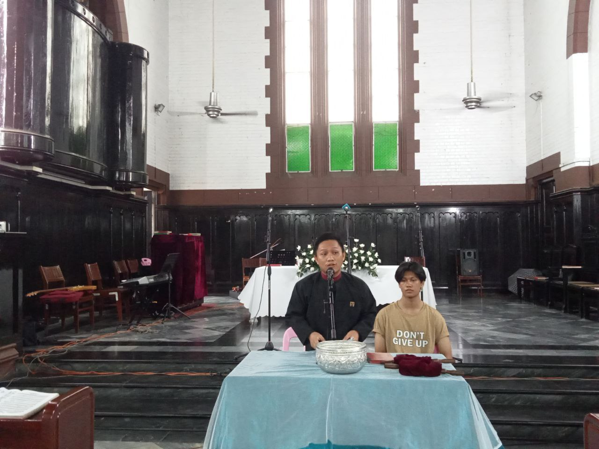
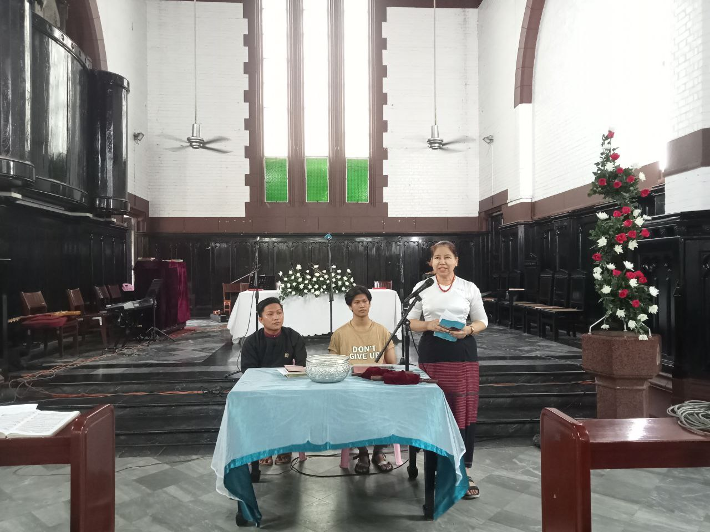

8(Sep) Sunday လူငယ်ဝတ်ပြုကိုးကွယ်ခြင်းချိန်မှာတော့ဆရာရော်နယ်လျံထံမှတရားဒေသနာကိုခံယူခဲ့ရပါတယ်။ဆရာနှင့်ဆရာမိသားစုပေါ်သို့ဘုရားရှင်ထံမှကောင်းချီးများသာ၍ခံစားရပါစေလို့ဆုမွန်ကောင်းတောင်းပေးလိုက်ရပါတယ်။တစ်ဆက်ထဲမှာပဲဆရာမဖြူဖြူရွှေမှလူငယ်များခွန်းအားရစေရန်သက်သေခံဝေမျှသွားခဲ့ပါတယ်။ဆရာမနှင့်မိသားစုပေါ်သို့ဘုရားရှင်ထံမှကောင်းချီးများသာ၍ခံစားရပါစေလို့ဆုမွန်ကောာင်းတောင်းပေးလိုက်ရပါတယ်။ပါဝင်ပေးကြသောအညီမောင်နှအယောက်စီကိုလဲဘုရားရှင်ထံမှကောင်းချီးများသာ၍ခံစားရပါစေ။နောက်နောင်အပတ်များမှာလဲဆက်လက်ပါဝင်ပေးကြဖို့ဖိတ်ခေါ်အပ်ပါတယ်။


Published on: September 26, 2024